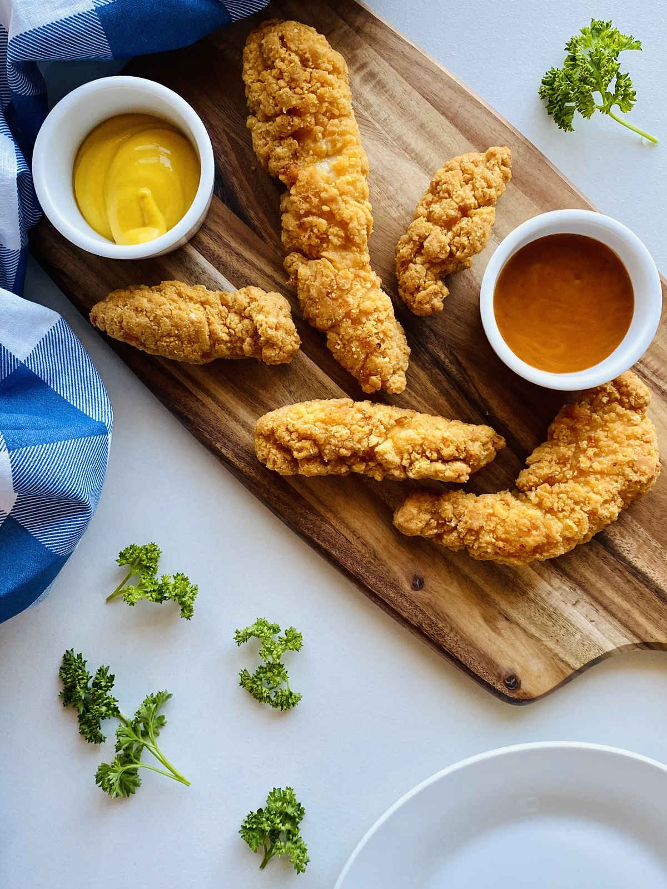

Chicken Tenders

Description
This is a copycat recipe of Red Lobster's delicious fried chicken tenders.
Ingredients
Marinade
- 6 Medium Garlic Cloves
- 2 Cups of Buttermilk
- 1 and a 1/4 Teaspoons of Ground Cumin
- 1/2 A Teaspoon of Salt
- 1/2 A Teaspoon of Pepper
- A 1/4 Teaspoon of Cayenne Pepper
- 4 to 6 Boneless Chicken Breasts, Cut Into Strips
Coating
- 1 and a 1/2 Cups of Unbleached All-Purpose Flour
- 1 and 3/4 Teaspoons of Salt
- 1 and 1/2 Teaspoons of Pepper
- 1/2 A Teaspoon of Ground Cumin
- 1 Teaspoon of Cayenne Pepper
- Safflower Oil (for deep frying)
Steps
- Mash garlic with flat side of knife
- Place garlic in medium-sized bowl
- Add buttermilk, cumin, salt, pepper, and cayenne to bowl
- Use whisk to blend ingredients in bowl together
- Place chicken strips in 13 by 9-inch glass baking dish
- Pour buttermilk mixture over chicken strips and turn the strips to coat it
- Cover and chill the chicken strips (in their glass baking dish) at least 8 hours or overnight,
turning the strips occasionally
- Place rack over baking sheet. Remove chicken from marinade and set on rack. Drain for 10 mintues.
- Mix flour, salt, pepper, cumin and cayenne pepper in large bowl.
- Toss chicken strips in batches in flour mixture, turning to coat the strips. Shake off excess.
- Toss each piece again in flour mixture; shake off excess.
- Transfer chicken to rack on baking sheet.
- Let stand at least 15 minutes and up to 45 minutes.
- Preheat oven to low.
- Line baking sheet with paper towels.
- Pour oil into heavy large skillet to depth of 3/4 inch.
- Heat oil over high heat to 375 degrees F or until small cube of fresh bread sizzles instantly when added.
- Add chicken strips to skillet.
- Adjust heat so that temperature remains between 340 and 350 degrees F or until small cube of bread sizzles slowly when added.
- Fry until chicken is golden brown and cooked through, about 10 minutes.
- Using tongs, transfer chicken to prepared sheet and drain. Transfer chicken to platter and serve.